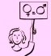

پذيرش > كوچه به كوچه > چند برش از پخش بروشورهای کمپین در هشت مارس 87
 8 مارس، روز جهانی زن 8 مارس، روز جهانی زن

 چند برش از پخش بروشورهای کمپین در هشت مارس 87 چند برش از پخش بروشورهای کمپین در هشت مارس 87
21 فروردین 1388 - نگار انسان - نسخه قابل چاپ
وقتی به میدان هفت تیر رسیدم ناخودآگاه خرداد ماه 85 را به یاد آوردم ... هوا کم کم رو به تاریکی می رفت و ازدحام جمعیت و ترافیک سنگین اتومبیل ها شلوغی میدان را غیر قابل تحمل کرده بود .... از پارک سر خیابان قائم مقام - هفت تیر رد می شدم ، صحنه های خرداد 85 یک به یک از جلوی چشمانم می گذشتند .... میدان هفت تیر را دوست ندارم چون من را به یاد آن روز می اندازد .... روزی که قرار بود همه با هم یک صدا و متحد و در حرکتی مسالمت آمیز در اعتراض به نابرابری ها و تبعیض علیه زنان فریاد بکشیم ، به چنان خشونتی کشیده شد که تا به آن روز با سن و سال کمی که داشتم ، ندیده بودم ....
با بچه ها جلوی روزنامه فروشی جنوب میدان هفت تیر قرار داشتیم .... قبل از اینکه سر قرار بروم از برو شوری که روی سی دی ریخته بودم پرینت گرفتم و بعد به تعدادی که برای پخش نیاز بود کپی گرفتم .... و با شور و شوقی زیاد به مناسبت روز جهانی زن به میان مردم رفتیم و پخش بروشور را آغاز کردیم ....
- میدان هفت تیر، خیابان مفتح جنوبی، یکی از مانتو فروشی های خیابان مفتح، دو خانم چادری در حال خرید
با دیدن بروشور نگاهی پرسشگر و نگران به من می اندازند. من برایشان توضیح می دهم که این بروشورها برای چیست اما ار نگاهشان این طور به نظر می رسد که هنوز قانع نشده اند. لبخند اطمینان بخشی می زنم و 8 مارس (روز جهانی زن) را تبریک می گویم و از آن دو جدا می شوم.
در حال حرکت در خیابان مفتح جنوبی بروشور ها را به مردم می دهیم و 8 مارس را تبریک می گوییم .... واکنش بعضی ها با لبخند و رویی گشاده است و واکنش بسیاری دیگر از مردم به دلیل بی اطلاعی از این روز اندکی منفی است و خیلی ها بروشور را نمی گیرند ....
- مطب دکتر
بروشور را به منشی جوان می دهم . 8 مارس را تبریک می گویم... با لبخندی این روز را به من تبریک می گوید و از کمپین سوال می کند و اینکه چطور می شود به کمپین ملحق شد ... برایش توضیحات لازم را می دهم و دختر هم با رویی باز استقبال می کند و من افسوس می خورم که چرا بیانیه نداشتم تا از او امضا بگیرم ....
- داروخانه، دو خانم جوان در حال صحبت با یکدیگر
بروشور را به آنها می دهم . یکی از آنها می گوید: کجا تظاهراته؟ بگید که حتما شرکت کنیم ... و من به آنها توضیح می دهم که هیچ کدام از این مسائلی که می گویند نیست و این بروشورها به مناسبت 8 مارس روز جهانی زن به شما داده شده است .... تبریک می گویم و از آن دو جدا می شوم و با خود می گویم که چرا هیچ کسی روز به این مهمی در تاریخ را نمی شناسد؛ روزی که فارغ از مادر بودن یا نبودن، دست پخت خوب داشتن یا نداشتن، مجرد یا متاهل بودن، کدبانوی خانه بودن یا نبودن، مطلقه بودن یا به سر بردن در یک رابطه همسری، جوان بودن یا پیر بودن و غیره روز ما زنان است.
- دفتر جبهه مشارکت
در پایان مراسم بروشورها را در میان حاضرین پخش می کنیم و 8 مارس را به همگی تبریک می گوییم... یکی از پسرها به ما می گوید: شما زیرشاخه ی خانم محتشمی پور هستید؟بیاین زیر شاخه اون بشید .... خیلی کارش درسته .... من و علی می گوییم ما زیرشاخه هیچ کسی نیستیم و مستقل، خود جوش و بدون وابستگی به هیچ کس و هیچ سازمانی داوطلبانه در کمپین کار می کنیم. برخی از آنها تا حدودی با کمپین آشنا بودند .... 8 مارس را تبریک می گوییم و با امید به آینده ای روشن از ساختمان خارج می شویم .... نزدیک غروب است و هوا خنک؛ و من خنکی هوا رو روی صورتم حس می کنم و کمی سبک بالم .... و امید دارم به آینده های روشنی که پیش روی ماست ....
ارسال به
بالاترین
،
توییتر
،
فریندفید
،
فیسبوک
در همين بخش :
 روايت بيست و پنجمين شهريور / نرگس طیبات روايت بيست و پنجمين شهريور / نرگس طیبات
وقتی آتش خاموش شود/فرشته نوبخت
آن گاه که زن شدم / ویژه نامه 8 مارس 1391
چیزی زیر پوست این شهر می جوشد / دلارام علی
گرسنگی / وبلاگ سیب و سرگشتگی
ديگر بخش ها :
طرح یک میلیون امضا
|
مقالات
|
سایت نوشته ها
|
اخبار
|
گزارش كمپين
|
گفت و گو
|
علیه سکوت
|
كوچه به كوچه
|
نامه های شما
|
گزارش ویژه
|
گفتگو با اعضا
|
ویژه سالگرد کمپین
|
تصویر برابری
|
دل آرام علی
|
تریبون
|
مقالات
|
تاریخ شفاهی
|
خارج از چارچوب
|
کتابخانه
|
درباره کمپین
|
کمپین در شهرها
|
کمپین در بند
|
صدای تغییر
|
ویژه 22 خرداد
|
لایحه حمایت از خانواده
|
گالری
|
عشا مومنی
|
امیر یعقوبعلی
|
خدیجه مقدم
|
راحله عسگری زاده و نسیم خسروی
|
پروین اردلان،جلوه جواهری، مریم حسین خواه، ناهید کشاورز
|
زینب پیغمبرزاده
|
سعیده امین، سارا ایمانیان، محبوبه حسین زاده، ناهید کشاورز و همایون نامی
|
احترام شادفر
|
نسیم سرابندی زاده،فاطمه دهدشتی
|
وبلاگ مهمان
|
پرونده خرم آباد
|
دستگیری ها
|
مریم مالک
|
پرستو اللهیاری
|
مهرنوش اعتمادی
|
سمیه رشیدی
|
Other Languages
|
همراهان
|
«فراخوان کمپین ده روز با بهاره هدایت»
| English
|